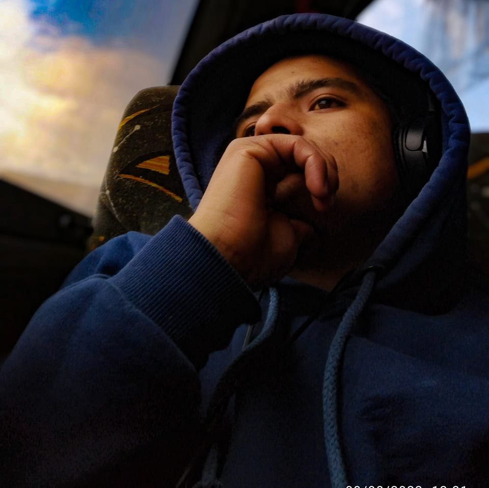

¿Quién administra el blog?

Abraham Alanya nacido en Perú en los años 90s, en sus tiempos libres y con ayuda de la música suele escribir relatos que ha pasado en su vida y muchas de ellas historias que desea vivir.
Porque un corazón herido, suele plasmar letras tal como se siente en esos momentos.
Espero disfruten de los escritos, puedes identificarte y compartirlo en tus redes, de igual manera puedes enviar tu historia en un mensaje privado para que sea publicado en este blog, envíalo a su facebook personal.
Un pequeño fragmento 🥰
Acabo de llegar de viaje, me senté en el la silla para poder descansar un poco, saqué el celular para revisar las notificaciones y me encontré con su un mensaje muy inesperado pero sensacional.
Una fotografía, fue suficiente para poder sonreir y llenarme de felicidad ✨. Ahora cierro los ojos para recordar cada detalle de la fotografía, en eso logro sentir pequeños estallidos en mi cerebro que recrean sus brazos cubriendo mi cuerpo, su manera de demostrarme todo su cariño.
Tus ojos y tu sonrisa aun lo recuerdo, aunque se muy bien que no volverás mis labios no prueban otra piel aun te siguen esperando.
En todo este delirio de nostalgia, sigo programando a pesar que las letras me duelen.
Por más tiempo que pase, te guardo un gran cariño.